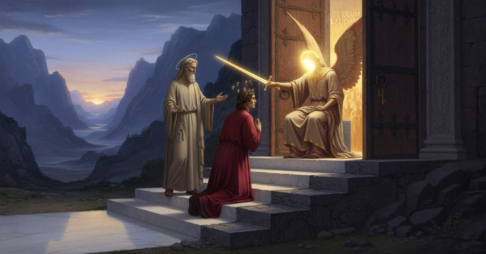

Purgatorio — Canto 9

All’alba Dante sogna un’aquila che lo rapisce, poi scopre che Lucia lo ha trasportato alla porta del Purgatorio, dove l’angelo gli incide sette P sulla fronte e, dopo la sua umile preghiera, gli apre l’ingresso al canto del «Te Deum». At dawn Dante dreams of an eagle that abducts him, then learns that Lucia has carried him to Purgatory’s gate, where the angel inscribes seven P’s on his forehead and, after his humble prayer, opens the entrance to the singing of the “Te Deum.” 夜明けにダンテは自分をさらう鷲の夢を見て、次いでルチアが自分を煉獄の門まで運んだと知る。そこで天使は彼の額に七つのPを刻み、彼の謙虚な祈りの後、「テ・デウム」の歌とともに入口を開く。
1
La concubina di Titone antico
The concubine of ancient Tithonus
ティトーネの古の愛人は
2
già s’imbiancava al balco d’orïente,
was already whitening on the balcony of the east,
すでに東のバルコニーで白み始めていた、
3
fuor de le braccia del suo dolce amico;
forth from the arms of her sweet friend;
その優しき友の腕の外で。
4
di gemme la sua fronte era lucente,
of gems her forehead was resplendent,
宝石でその額は輝いていた、
5
poste in figura del freddo animale
placed in the shape of the cold animal
冷たい動物の姿に置かれ
6
che con la coda percuote la gente;
that with its tail strikes the people;
尾で人々を打つ者の。
7
e la notte, de’ passi con che sale,
and the night, of the steps with which it climbs,
そして夜は、その登る歩みで、
8
fatti avea due nel loco ov’ eravamo,
had taken two in the place where we were,
我らがいた場所で二歩を進め、
9
e ’l terzo già chinava in giuso l’ale;
and the third was already bending down its wings;
三歩目はすでに翼を下に傾けていた。
10
quand’ io, che meco avea di quel d’Adamo,
when I, who had with me that of Adam,
その時、私、アダムのそれを身に帯びていた者は、
11
vinto dal sonno, in su l’erba inchinai
overcome by sleep, upon the grass bent down
眠りに打ち負かされ、草の上に身をかがめた
12
là ’ve già tutti e cinque sedavamo.
there where all five of us were already sitting.
そこは我ら五人全員がすでに座っていた場所だった。
13
Ne l’ora che comincia i tristi lai
In the hour when the sad laments begin
悲しき嘆きの歌を始めるその時刻に
14
la rondinella presso a la mattina,
from the little swallow near the morning,
つばめは朝の近くに、
15
forse a memoria de’ suo’ primi guai,
perhaps in memory of her first woes,
おそらくはその最初の悲しみを記憶して、
16
e che la mente nostra, peregrina
and when our mind, a pilgrim
そして我らの心は、巡礼者として
17
più da la carne e men da’ pensier presa,
further from the flesh and less held by thoughts,
肉体からより遠ざかり、思いにあまり囚われず、
18
a le sue visïon quasi è divina,
in its visions is almost divine,
その幻視においてほとんど神のようになるとき、
19
in sogno mi parea veder sospesa
in a dream it seemed to me I saw suspended
夢の中で、私には宙に吊られているのが見えたようだった
20
un’aguglia nel ciel con penne d’oro,
an eagle in the sky with feathers of gold,
金の羽を持つ一羽の鷲が空に、
21
con l’ali aperte e a calare intesa;
with wings spread and intent on descending;
翼を開き、降下しようとして。
22
ed esser mi parea là dove fuoro
and I seemed to be there where were
そして私には、自分がそこにいるように思われた
23
abbandonati i suoi da Ganimede,
abandoned his companions by Ganymede,
ガニュメーデースがその仲間を捨て去った場所に、
24
quando fu ratto al sommo consistoro.
when he was rapt to the supreme conclave.
彼が至高の会議へと攫われた時に。
25
Fra me pensava: ‘Forse questa fiede
Within me I thought: ‘Perhaps this one strikes
私は心の中で思った、「おそらくこれは襲うのだ
26
pur qui per uso, e forse d’altro loco
only here by habit, and perhaps from another place
ただここで習慣によって、そしておそらくは他の場所から
27
disdegna di portarne suso in piede’.
it disdains to carry one up in its talons.’
獲物を足で運び上げるのを潔しとしないのだろう」。
28
Poi mi parea che, poi rotata un poco,
Then it seemed to me that, after it wheeled a little,
それから私には、少し旋回したのち、
29
terribil come folgor discendesse,
terrible as lightning it descended,
稲妻のように恐ろしく降下し、
30
e me rapisse suso infino al foco.
and snatched me upward as far as the fire.
そして私を火の天まで攫うように思われた。
31
Ivi parea che ella e io ardesse;
There it seemed that it and I were burning;
そこでは、それと私が燃えているように思われた。
32
e sì lo ’ncendio imaginato cosse,
and the imagined fire so scorched,
そしてその想像の炎はひどく焼いたので、
33
che convenne che ’l sonno si rompesse.
that it was necessary for my sleep to break.
眠りが破られねばならなかった。
34
Non altrimenti Achille si riscosse,
Not otherwise did Achilles start up,
アキレウスが目を覚ましたのと異ならず、
35
li occhi svegliati rivolgendo in giro
his awakened eyes turning all around
目覚めた眼をあたりに向け、
36
e non sappiendo là dove si fosse,
and not knowing where he was,
自分がどこにいるかも分からずに、
37
quando la madre da Chirón a Schiro
when his mother from Chiron to Scyros
母がケイロンからスキロスへと
38
trafuggò lui dormendo in le sue braccia,
secretly carried him sleeping in her arms,
眠る彼を腕に抱いて運び去り、
39
là onde poi li Greci il dipartiro;
from where the Greeks later took him away;
後にギリシャ人たちが彼をそこから連れ去った場所へと。
40
che mi scoss’ io, sì come da la faccia
so did I startle, as from my face
そのように私は目を覚ました、あたかも顔から
41
mi fuggì ’l sonno, e diventa’ ismorto,
sleep fled, and I became pale,
眠りが逃げ去り、蒼ざめたように、
42
come fa l’uom che, spaventato, agghiaccia.
like a man who, terrified, freezes.
恐怖に凍りつく人のように。
43
Dallato m’era solo il mio conforto,
At my side was only my comfort,
私の傍らにはただ私の慰め手がおられ、
44
e ’l sole er’ alto già più che due ore,
and the sun was already more than two hours high,
太陽はすでに二時間以上も高く昇り、
45
e ’l viso m’era a la marina torto.
and my face was turned to the seashore.
私の顔は海の方へ向いていた。
46
«Non aver tema», disse il mio segnore;
«Have no fear», said my lord;
「恐れるな」と、私の主は言われた。
47
«fatti sicur, ché noi semo a buon punto;
«be assured, for we are at a good point;
「安心せよ、我らは良き地点にいるのだから。
48
non stringer, ma rallarga ogne vigore.
do not constrain, but expand all your strength.
力をこわばらせず、むしろすべての力を解き放て。
49
Tu se’ omai al purgatorio giunto:
You have now reached Purgatory:
お前は今や煉獄に到着したのだ。
50
vedi là il balzo che ’l chiude dintorno;
see there the cliff that encloses it;
見よ、あれがそれを周りに囲む断崖だ。
51
vedi l’entrata là ’ve par digiunto.
see the entrance there where it seems parted.
見よ、あそこが裂けているように見える入り口だ。
52
Dianzi, ne l’alba che procede al giorno,
A while ago, in the dawn that precedes the day,
先ほど、昼に先立つ夜明けに、
53
quando l’anima tua dentro dormia,
when your soul was sleeping within you,
お前の魂が内で眠っていた時、
54
sovra li fiori ond’ è là giù addorno
over the flowers with which it is adorned down there
下界を飾る花々の上に
55
venne una donna, e disse: “I’ son Lucia;
came a lady, and said: ‘I am Lucia;
一人の貴婦人が現れ、言った、『私はルチア。
56
lasciatemi pigliar costui che dorme;
let me take this man who sleeps;
この眠る者を私に預けなさい。
57
sì l’agevolerò per la sua via”.
so I will ease him on his way’.
そうすれば彼の道を楽にしてあげよう』と。
58
Sordel rimase e l’altre genti forme;
Sordello remained and the other noble forms;
ソルデッロと他の高貴な魂たちは残り、
59
ella ti tolse, e come ’l dì fu chiaro,
she took you, and as the day grew bright,
彼女はお前を抱き上げ、そして夜が明けると、
60
sen venne suso; e io per le sue orme.
she came upward; and I along her tracks.
こちらの上へとやって来た。そして私はその後を追った。
61
Qui ti posò, ma pria mi dimostraro
Here she set you down, but first showed me
ここに彼女はお前を置いたが、その前に私に見せたのは
62
li occhi suoi belli quella intrata aperta;
her beautiful eyes that open entrance;
彼女の美しい眼、あの開かれた入り口だった。
63
poi ella e ’l sonno ad una se n’andaro».
then she and sleep went away at once».
それから彼女と眠りは共に去って行った」。
64
A guisa d’uom che ’n dubbio si raccerta
In the manner of a man who in doubt is reassured
疑いの中で確信を得て、
65
e che muta in conforto sua paura,
and who changes his fear into comfort,
その恐怖を安らぎに変え、
66
poi che la verità li è discoperta,
after the truth has been discovered to him,
真実が彼に明かされた後の人のように、
67
mi cambia’ io; e come sanza cura
I changed; and when without care
私は変わった。そして憂いのない私を
68
vide me ’l duca mio, su per lo balzo
my leader saw me, up the cliff
私の導き手が見ると、断崖を上へと
69
si mosse, e io di rietro inver’ l’altura.
he moved, and I behind him toward the height.
進み、私はその背後から高みへと向かった。
70
Lettor, tu vedi ben com’ io innalzo
Reader, you see well how I elevate
読者よ、君はよく見るであろう、私がいかに高めるかを
71
la mia matera, e però con più arte
my subject matter, and therefore with more art
私の主題を、それゆえにより多くの技巧をもって
72
non ti maravigliar s’io la rincalzo.
do not marvel if I support it.
私がそれを補強しても驚かないでほしい。
73
Noi ci appressammo, ed eravamo in parte
We drew near, and were at a place
我らは近づき、ある場所に至った、
74
che là dove pareami prima rotto,
where what before had seemed to me broken,
そこは、私には最初壊れているように見えたが、
75
pur come un fesso che muro diparte,
just like a fissure that parts a wall,
まさに壁を分かつ裂け目のような、
76
vidi una porta, e tre gradi di sotto
I saw a gate, and three steps below
私は一つの門と、その下に三つの階段を見た、
77
per gire ad essa, di color diversi,
to go to it, of different colors,
そこへ行くための、それぞれ色の異なる、
78
e un portier ch’ancor non facea motto.
and a gatekeeper who as yet made no sound.
そして、まだ一言も発しない一人の門番を。
79
E come l’occhio più e più v’apersi,
And as my eye opened more and more to it,
そして私がますますそこに目を開くと、
80
vidil seder sovra ’l grado sovrano,
I saw him sitting on the highest step,
彼が最上段に座っているのを見た、
81
tal ne la faccia ch’io non lo soffersi;
such in the face that I did not endure it;
その顔は、私が耐えられないほどのものであった；
82
e una spada nuda avëa in mano,
and a naked sword he had in his hand,
そして手に抜き身の剣を持っていた、
83
che reflettëa i raggi sì ver’ noi,
that reflected the rays so toward us,
それは我らに向かって光を反射し、
84
ch’io drizzava spesso il viso in vano.
that I often directed my face in vain.
私はしばしば虚しく顔を上げようとした。
85
«Dite costinci: che volete voi?»,
"Speak from there: what do you want?",
「そこから言え、何を望むのか？」と、
86
cominciò elli a dire, «ov’ è la scorta?
he began to say, "where is the escort?
彼は言い始めた、「案内人はどこにいる？
87
Guardate che ’l venir sù non vi nòi».
Beware lest the coming up should harm you."
上って来ることが汝らに害とならぬよう気をつけよ」。
88
«Donna del ciel, di queste cose accorta»,
"A Lady of heaven, of these things aware,"
「天の貴婦人が、これらのことに気づかれ」、
89
rispuose ’l mio maestro a lui, «pur dianzi
my master answered him, "just now
私の師は彼に答えた、「つい先ほど
90
ne disse: “Andate là: quivi è la porta”».
said to us: ‘Go there: there is the gate’."
我らにこう言われた、『そこへ行け、そこに門がある』と」。
91
«Ed ella i passi vostri in bene avanzi»,
"And may she advance your steps for good,"
「ならばその方が汝らの歩みを善へと進ませんことを」、
92
ricominciò il cortese portinaio:
began again the courteous gatekeeper:
礼儀正しい門番は再び言った、
93
«Venite dunque a’ nostri gradi innanzi».
"Come forward then to our steps."
「さあ、我らの階段の前へ来られよ」。
94
Là ne venimmo; e lo scaglion primaio
There we came; and the first step
そこへ我らは行った。そして最初の段は
95
bianco marmo era sì pulito e terso,
was white marble so polished and clean,
白い大理石で、非常に清らかで磨かれており、
96
ch’io mi specchiai in esso qual io paio.
that I mirrored myself in it as I appear.
私はそこに、ありのままの私が映るのを見た。
97
Era il secondo tinto più che perso,
The second was dyed darker than perse,
第二の段はペルソよりも濃く染まり、
98
d’una petrina ruvida e arsiccia,
of a rough and fire-scorched stone,
ざらざらとして焼けたような石でできており、
99
crepata per lo lungo e per traverso.
cracked lengthwise and crosswise.
縦と横にひび割れていた。
100
Lo terzo, che di sopra s’ammassiccia,
The third, which is massive on top,
第三の段は、その上にどっしりと構え、
101
porfido mi parea, sì fiammeggiante
seemed to me porphyry, so flaming
斑岩のように私には見えた、燃え立つように輝き
102
come sangue che fuor di vena spiccia.
like blood that spurts out of a vein.
血管からほとばしる血のように。
103
Sovra questo tenëa ambo le piante
Upon this held both his feet
この上に両足を置いていた
104
l’angel di Dio sedendo in su la soglia
the angel of God, sitting on the threshold
神の御使いは、敷居の上に座り、
105
che mi sembiava pietra di diamante.
that seemed to me a stone of diamond.
それは私には金剛石のように思われた。
106
Per li tre gradi sù di buona voglia
Up the three steps, with good will,
よき意志をもって三つの階段の上へ
107
mi trasse il duca mio, dicendo: «Chiedi
my leader drew me, saying: "Ask
我が導き手は私を引き、「請え」と言った
108
umilemente che ’l serrame scioglia».
humbly that he undo the lock."
謙虚に、その錠を解くようにと」。
109
Divoto mi gittai a’ santi piedi;
Devoutly I cast myself at the holy feet;
敬虔に私は聖なる足元に身を投げ出し、
110
misericordia chiesi e ch’el m’aprisse,
I asked for mercy and that he should open for me,
慈悲を乞い、私に開けてくれるよう願った、
111
ma tre volte nel petto pria mi diedi.
but first I struck my breast three times.
だがまず胸を三度打ってから。
112
Sette P ne la fronte mi descrisse
Seven P’s on my forehead he inscribed
七つのPを私の額に彼は記した
113
col punton de la spada, e «Fa che lavi,
with the point of his sword, and “See that you wash,
剣の切っ先で、そして「洗うがよい、
114
quando se’ dentro, queste piaghe» disse.
when you are inside, these wounds,” he said.
中に入った時に、これらの傷を」と言った。
115
Cenere, o terra che secca si cavi,
Ash, or earth that is dug up dry,
灰、あるいは乾いて掘り出された土は、
116
d’un color fora col suo vestimento;
would be of one color with his vestment;
その衣と同じ色であろう。
117
e di sotto da quel trasse due chiavi.
and from beneath it he drew two keys.
そしてその下から二つの鍵を取り出した。
118
L’una era d’oro e l’altra era d’argento;
The one was of gold and the other was of silver;
一つは金で、もう一つは銀であった。
119
pria con la bianca e poscia con la gialla
first with the white and then with the yellow
まず白いので、次に黄色いので
120
fece a la porta sì, ch’i’ fu’ contento.
he worked the gate so, that I was content.
門をそう操作したので、私は満ち足りた。
121
«Quandunque l’una d’este chiavi falla,
"Whenever one of these keys fails,
「これらの鍵の一つが失敗し、
122
che non si volga dritta per la toppa»,
so that it does not turn rightly in the keyhole,"
錠穴でまっすぐに回らない時はいつでも」
123
diss’ elli a noi, «non s’apre questa calla.
he said to us, "this passage does not open.
彼は我々に言った、「この通路は開かぬ。
124
Più cara è l’una; ma l’altra vuol troppa
One is more precious; but the other requires too much
一つはより高価である。だがもう一つはあまりに多くの
125
d’arte e d’ingegno avanti che diserri,
of art and skill before it will unlock,
術と知性を要する、錠を開ける前に、
126
perch’ ella è quella che ’l nodo digroppa.
because it is the one that unties the knot.
なぜならそれこそが結び目を解きほぐすものだからだ。
127
Da Pier le tegno; e dissemi ch’i’ erri
From Peter I hold them; and he told me I should err
ペテロから私はこれらを持つ。そして彼は私に言った、私が過つべきは
128
anzi ad aprir ch’a tenerla serrata,
rather in opening than in keeping it locked,
閉ざしておくことよりも、むしろ開ける方だと、
129
pur che la gente a’ piedi mi s’atterri».
provided that the people prostrate themselves at my feet."
ただ人々が私の足元にひれ伏しさえすれば」。
130
Poi pinse l’uscio a la porta sacrata,
Then he pushed the door of the sacred gate,
それから彼は聖なる門の扉を押して、
131
dicendo: «Intrate; ma facciovi accorti
saying: "Enter; but I make you aware
言った、「入れ。だが心に留めよ
132
che di fuor torna chi ’n dietro si guata».
that he who looks back returns outside."
後ろを顧みる者は外へ戻るのだと」。
133
E quando fuor ne’ cardini distorti
And when upon their grating hinges turned
そして、歪んだ蝶番から外れて
134
li spigoli di quella regge sacra,
the pivots of that sacred portal,
その聖なる王宮の隅が動く時、
135
che di metallo son sonanti e forti,
which are of resounding and strong metal,
金属でできていて鳴り響き、そして強いのだが、
136
non rugghiò sì né si mostrò sì acra
not so roared nor showed itself so harsh
これほど轟きもせず、これほど厳しくも見せなかった
137
Tarpëa, come tolto le fu il buono
Tarpeia, when the good Metellus was taken from it,
タルペイアは、善きメテッルスが彼女から
138
Metello, per che poi rimase macra.
whereby it then remained lean.
奪われた時も、そのために彼女は後に痩せ細ったが。
139
Io mi rivolsi attento al primo tuono,
I turned, attentive to the first thunder,
私は最初の轟音に注意深く向き直り、
140
e ‘Te Deum laudamus’ mi parea
and ‘Te Deum laudamus’ it seemed to me
そして「テ・デウム・ラウダムス」が私には思われた
141
udire in voce mista al dolce suono.
I heard in a voice mixed with the sweet sound.
甘美な音と混じった声で聞こえるのが。
142
Tale imagine a punto mi rendea
Such an impression exactly was rendered to me
まさにそのような印象を私に与えた
143
ciò ch’io udiva, qual prender si suole
by what I heard, as one is wont to get
私が聞いたものは、人がよく抱く印象と
144
quando a cantar con organi si stea;
when people are singing with an organ;
オルガンと共に歌う場にいる時のように。
145
ch’or sì or no s’intendon le parole.
that now yes, now no, the words are understood.
その時、言葉は聞こえたり聞こえなかったりするのだ。